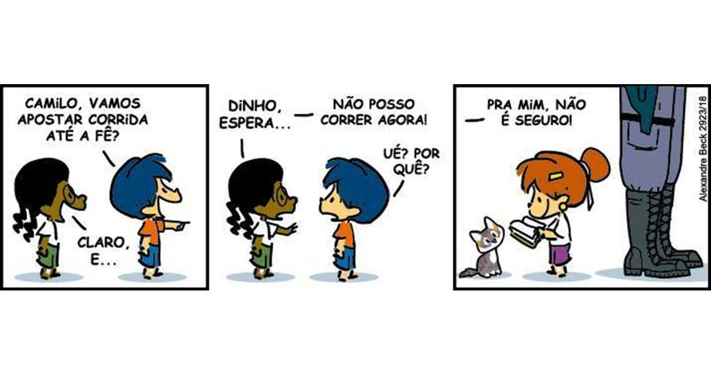

Os preconceitos socioculturais são atitudes ou julgamentos negativos direcionados a grupos de pessoas com base em sua cultura, classe social, religião, etnia ou outras características sociais. Esses preconceitos surgem de estereótipos e desinformação, levando à marginalização de determinados grupos e à reprodução de desigualdades. Embora muitas vezes sejam velados, esses preconceitos afetam a convivência social, perpetuando a exclusão e a discriminação. Um dos principais fatores que alimentam os preconceitos socioculturais é a falta de conhecimento sobre a diversidade. Muitas vezes, as pessoas julgam outras com base em visões limitadas ou distorcidas, ignorando as complexidades e riquezas de diferentes culturas e realidades. Isso pode ser observado, por exemplo, na forma como diferentes classes sociais são estigmatizadas ou como certas religiões são estereotipadas como “ameaçadoras” ou “inferiores”. Esses preconceitos não afetam apenas as vítimas diretamente, mas também enfraquecem o tecido social, criando divisões entre as pessoas. Quando um grupo é estigmatizado, seus membros enfrentam dificuldades em várias áreas da vida, como o acesso à educação, ao mercado de trabalho e a serviços de saúde. Além disso, a perpetuação desses preconceitos alimenta um ciclo de discriminação que passa de geração em geração, tornando mais difícil a construção de uma sociedade justa e igualitária. O combate aos preconceitos socioculturais exige mudanças profundas nas atitudes individuais e coletivas. A educação é uma ferramenta essencial nesse processo, pois pode promover a compreensão e o respeito pelas diferenças. Ao aprender sobre outras culturas e histórias, as pessoas se tornam mais empáticas e abertas ao diálogo. A mídia também tem um papel importante, pois pode influenciar a maneira como as culturas e os grupos sociais são representados, ajudando a construir uma imagem mais positiva e plural da sociedade. Somente com a conscientização e a promoção de um ambiente mais inclusivo é que será possível superar os preconceitos socioculturais e criar uma sociedade verdadeiramente igualitária.
